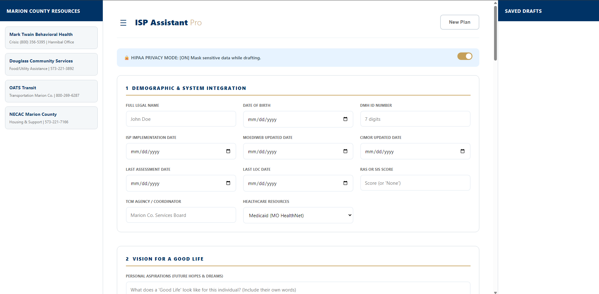
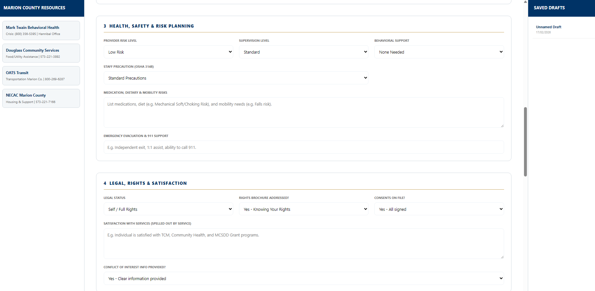

ISP Assistant
Pro

01 // The Challenge
The Marion County Services for the Department of Developmental Disabilities was struggling with an outdated, narrative-heavy Individual Support Plan (ISP) process that placed immense burden on frontline staff.
The Administrative Burden
Case Managers (CMs) spent 40% of their week on manual data entry, leading to extreme "click-fatigue" and organizational burnout.
The Compliance Gap
State auditors require rigorous "Active Treatment" language. Vague phrasing led to rejected plans, delayed services, and high audit risk.
The HIPAA Constraint
Standard cloud tools (Notion, Google Docs) were prohibited due to lack of BAAs and strict patient confidentiality laws.
02 // The Solution
I engineered a Zero-Footprint Logic Engine to build a client-side web application that acts as a clinical "narrative calculator." This tool bridges the gap between raw client desires and Missouri-mandated clinical markers.

Uses a dropdown-driven "Building Block" approach to turn casual goals into standardized SMART goals instantly.
Pre-loaded with MO-approved active verbs (Model, Facilitate, Educate) to ensure audit-readiness on the first draft.
03 // The Execution
Regulatory Discovery
Deep-dive analysis of Missouri 9 CSR 45-3.010 and the "Good Life" Framework to identify required clinical triggers.
Zero-Knowledge Architecture
Opted for a single-file HTML/JS deployment. By processing data only in the browser's volatile RAM, I bypassed the need for IT server infrastructure while maintaining 100% HIPAA compliance.

04 // The Impact
| Metric | Pre-Deployment | Post-Deployment |
|---|---|---|
| Drafting Time | ~15-20 Minutes / Goal | < 2 Minutes |
| Audit Compliance | High Risk (Passive) | 100% Active Phrasing |
| IT Overhead | Complex Security Reqs | Zero (Browser Only) |
| Revision Cycles | Frequent Rejections | First-Pass Approval |
05 // Technical Appendix
I. Data Lifecycle Management
The primary security feature is its Stateless Architecture. Unlike SaaS platforms, this tool functions as a "Client-Side Processor."
All logic executes in the browser RAM. Data never leaves Volatile Memory.
Closing the tab instantly purges all session data. No database, no POST requests.
II. Missouri Clinical Logic
Staff will \ the necessary steps to ensure success.
Progress will be monitored \.;
Variable Sanitization: Logic encourages initials for De-Identification.
III. Deployment Strategy
Hosted on the agency's internal drive. It inherits existing Windows Active Directory permissions, removing the need for a separate login system.
06 // Conclusion
"By leveraging a client-side JavaScript architecture, I provided the Marion County Department of Mental Health with a modern, high-speed drafting tool that satisfies the 'Security Rule' of HIPAA. This project demonstrates my ability to build high-impact tools within highly regulated environments where traditional cloud solutions are often prohibited."